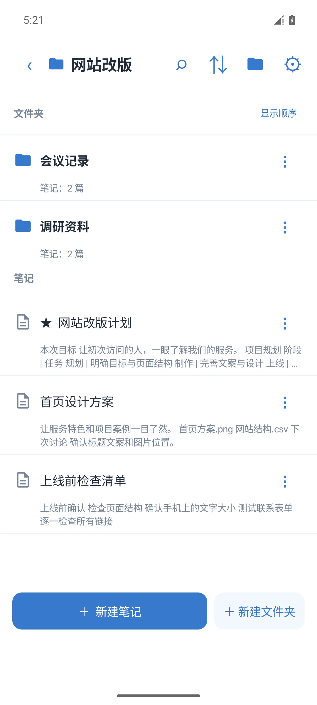
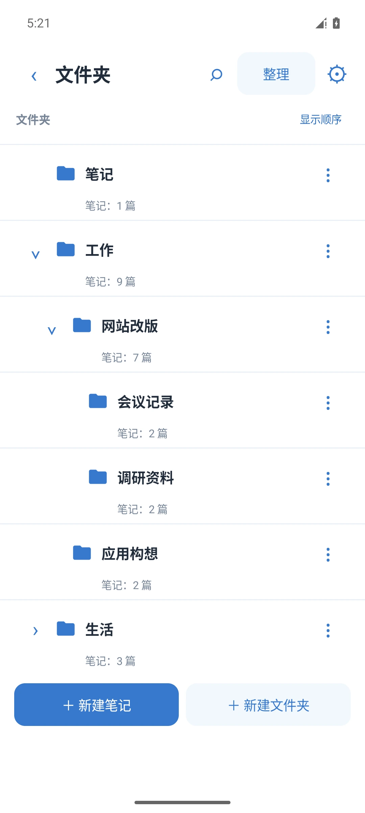
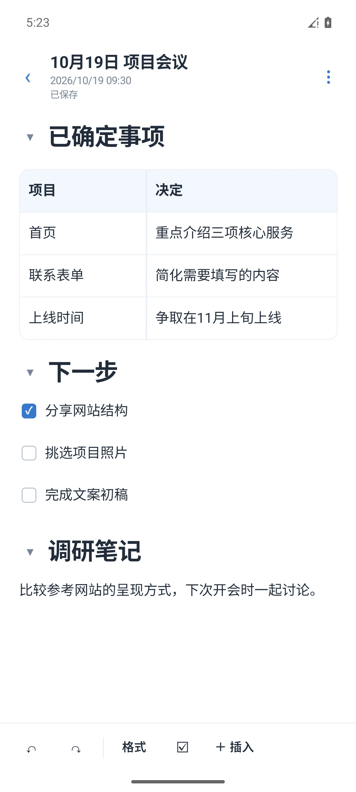
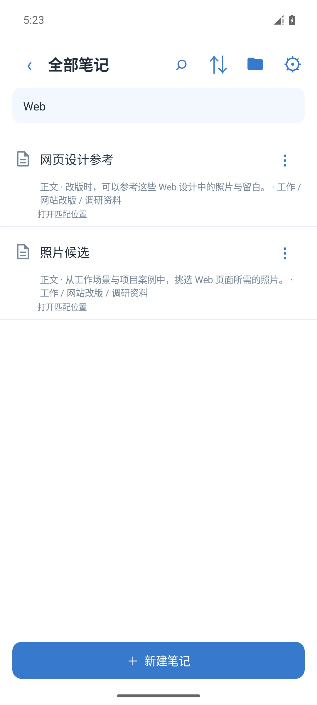
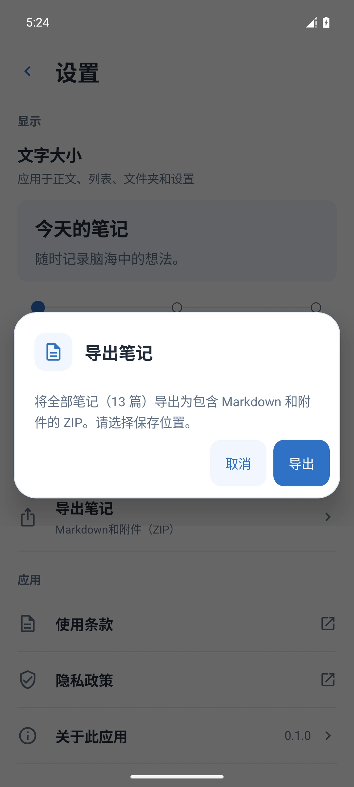

给每个项目，
留一个位置。
例如在“工作”里建一个“网站改版”文件夹，再在里面建一个“会议记录”文件夹。
同一个项目的会议笔记和调研资料，也可以分开放。
-
工作
-
网站改版
-
会议记录
- 10月19日 项目会议
- 调研资料
-
-
打开文件夹，
直接记下来。
打开“会议记录”文件夹，新建的笔记就会保存在那里。以后还可以移动笔记和文件夹。
会议记录和资料，
放在同一篇笔记里。
把会议决定整理成表格，把下一步任务列成待办清单。还可以附上图片和文件，回顾时不用来回找资料。

笔记多了，
也能重新整理。
项目多了，可以移动文件夹或调整顺序。笔记太长时，可以把其中一部分拆成新笔记。原笔记会保留链接，方便以后找到拆出的内容。
会议决定
梳理发布页面的结构
比较参考网站及功能
下次开会时确认
找得到笔记，
也带得走。
忘了放在哪？
搜正文也能找到。
输入记得的词，就能搜索笔记标题和正文。选择搜索结果，可直接跳到匹配位置。

导出笔记时，
保留文件夹层级。
将笔记和附件打包成 ZIP，同时保留原来的文件夹层级。导出后的笔记是 Markdown 文件，可以在电脑上阅读。

笔记保存在设备上。
无需注册账号，离线也能查看和编辑笔记。
常见问题
支持哪些设备？
Strunote 是一款 Android 应用。可在 Google Play 确认你的设备是否支持。
需要付费吗？
可以免费使用。笔记列表和文件夹列表会显示广告。
换手机时能转移笔记吗？
在兼容的 Android 设备上，首次设置新设备时，选择从旧设备复制数据，即可转移笔记、文件夹和附件。Strunote 不支持设备间自动同步。
导出的 ZIP 可以重新导入吗？
ZIP 用于在应用之外阅读笔记和打开附件。Strunote 不支持导入 ZIP 文件。